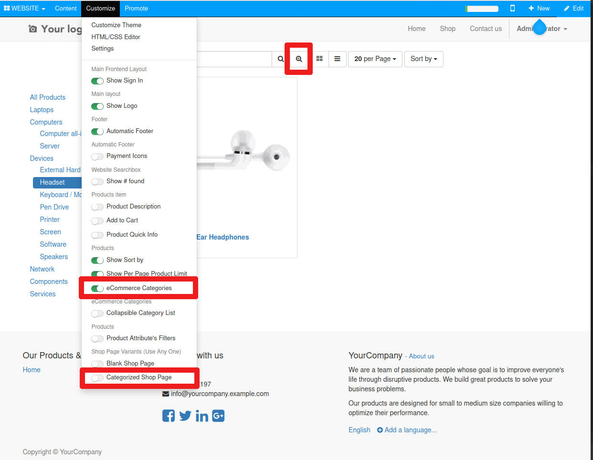

This simple module add an additional button to the search box for products to allow easy searching across all product categories. The functionality works when the "eCommerce Categories" customisation is enabled and the "Categorized Shop Page" customisation is disabled.
